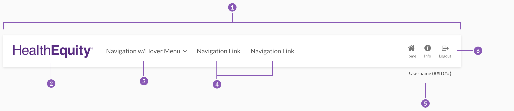
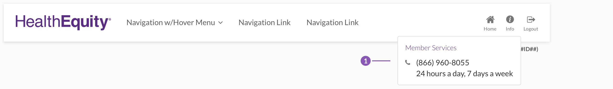
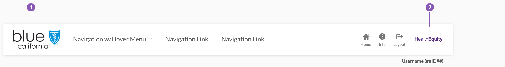
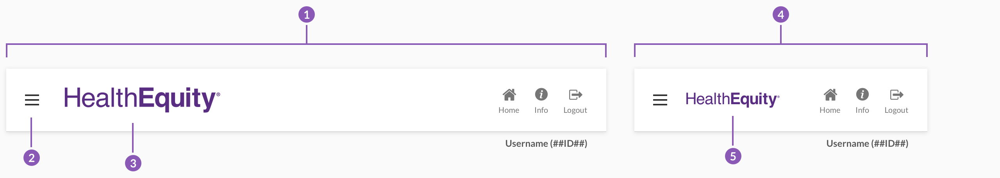
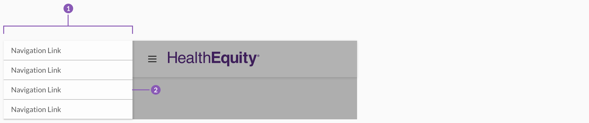

Page Header
The page header is fixed to the uppermost portion of the webpage or product.
The page header contains global elements such as logos, navigation, and primary system actions and information.
Default Header

- The page header spans the full width of the view port and is fixed to the top of the page.
- The HealthEquity logo is enclosed in a purple rectangle that spans the full height of the header 96px and a proportionate width of 263px.
- Global navigation items are displayed with an icon and a description directly below. Both icon and text should provide a clear picture of what would happen when clicked.
- Messages indicator, when there are unread messages a blue dot indicator is present top right of the icon.
- Profile details of the members name and id number are always visible to the right of the menu items.
- Profile cirlce the members intitials are contained in a circle to quicly reference the member in active session, both the profile details and the circle open the profile dropdown when selected.
Dropdowns
#

- A messages dropdown appears when the icon or text is selected. The number of unread messages is displayed in the header of the dropdown.
- Recent messages are displayed in the dropdown and can be selected to navigate and read the entirety of any message.
- The profile dropdown is displayed when the profile details or circle is selected. If there are multiple accounts they will be displayed with links to the account and its profile.
Co-Branding
#

- A partner logo may replace HealthEquity's when requested. Partner logos are restricted to a max-width of 240px and a max-height of 48px. Logos smaller than this should render at size. This allows our previous suggested size of 360px by 64px for partner logos to be proportionally reduced in size with accuracy.
- The HealthEquity logo may appear alongside a partner logo with a gray vertical bar separating them. Otherwise a HealthEquity logo in grayscale format displays in the footer unless specified.
Responsive
#

- At a tablet size viewport (less than 768px wide) the page header displays entirely purple and navigation links should not display.
- The hamburger menu icon appears to the left of the header. When selected menu should display as a dropdown containing all the navigation links.
- The logo shifts to be centered in the viewport and is reduced in size to either a max-width of 120px or a max-height of 24px.
- Safe Space should be included for any status bars with the same purple background color.
- A mobile size viewport should be adjusted to include safe space for any notches as well as the status bar.
- The logo for a mobile viewport is centered and kept at a max-width of 120px or a max-height of 24px.
- Partner logos on a mobile viewport are also centered and restriced to a max-width of 120px or a max-height of 24px. In scenarios where both the partner and the HealthEquity logo are side by side the second logo should no longer be displayed.
Responsive Menu

- The responsive menu appears as a dropdown below the header on the left side of the viewport overlaying a pages content, when the hamburger menu icon is selected.